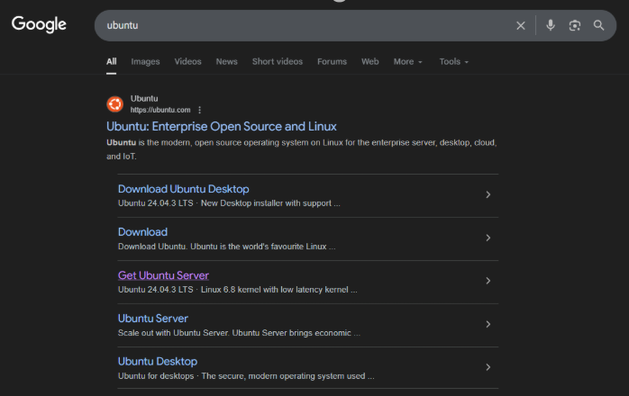
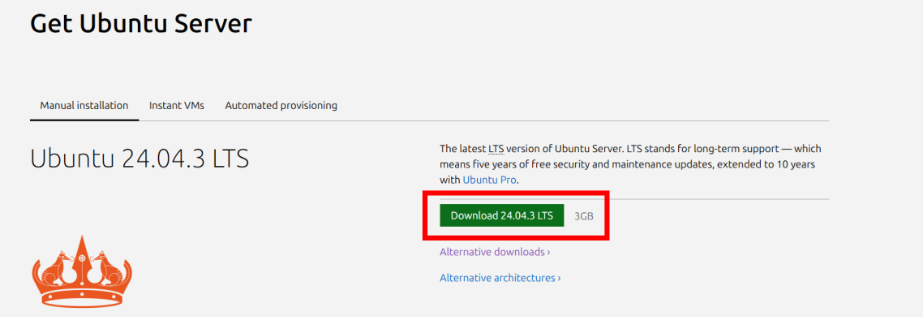
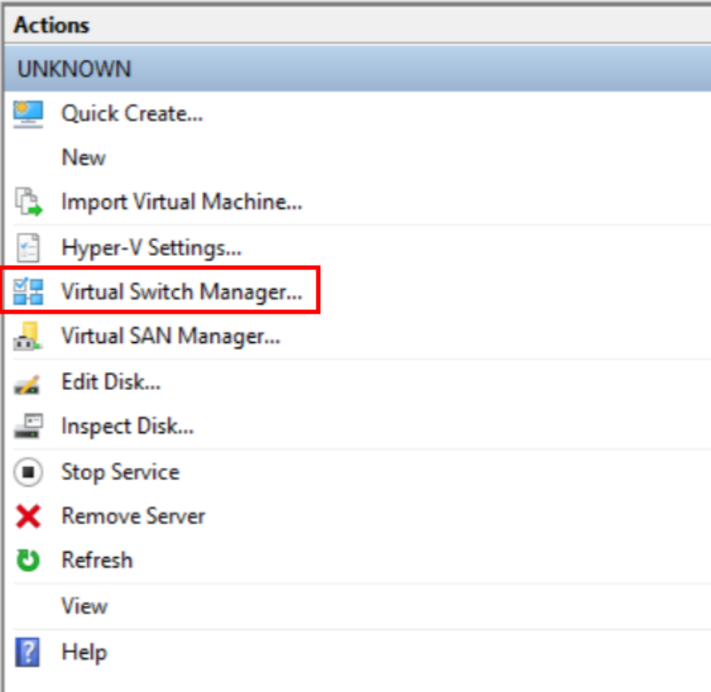
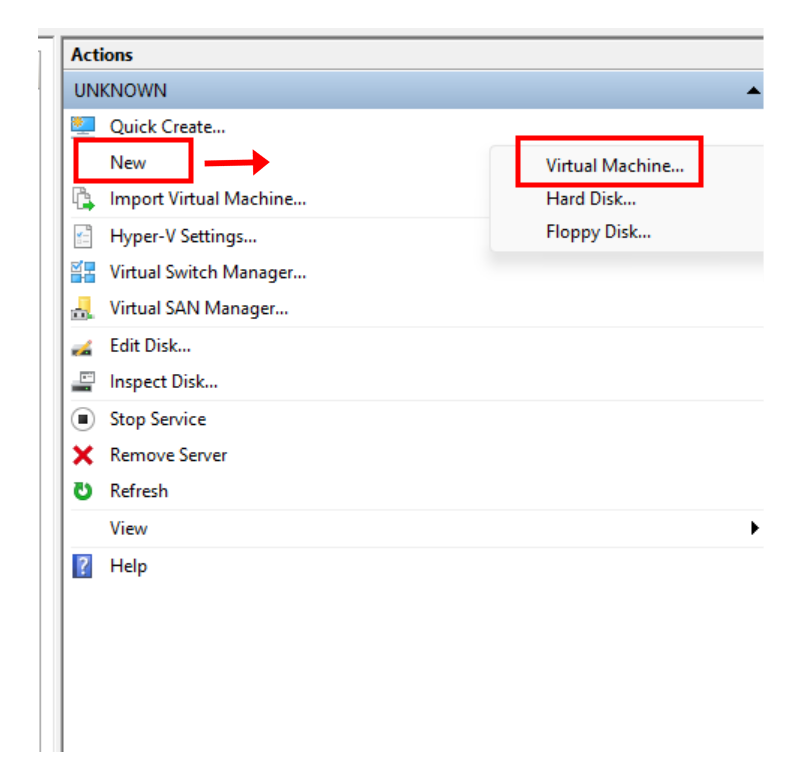

Sette opp en Ubuntu Server i windows
NB: Før du begynner, sørg for at systemet ditt oppfyller kravene nedenfor.
Maskinvarekrav
- Hyper-V aktivert
- 64-bit CPU
- 1–2 GB RAM
- Minst 10 GB lagringsplass
Steg 1: Søk i nettleseren etter ubuntu
Gå til søkefeltet i Windows og skriv "ubuntu", deretter klikker du på "Get Ubuntu Server" for å åpne nedlastingssiden.
Steg 2: Last ned Ubuntu 24.04.3 LTS
Når du har kommet til denne siden, Klikk på den store grønne knappen som står "Download 24.043 LTS". Dette laster ned en ISO fil.
Steg 3: Lag en Virtual switch manager
1. Gå inn i Hyper-V og klikk “Virtual Switch Manager” under Actions.

2. Deretter lager du en External Virutal Switch som har på “Allow management operating system to share this network adapter”. Sørg for at den er på rett External network. Navngi den feks “ForVM”.
Steg 4: Lag en virtuell maskin
1. I Hyper-V, gå på “New” under Actions på starts-skjermen. Velg så “Virtual Machine”.

2. Gi maskinen et passende navn
3. Velg Generasjon 1. Denne fungerer fint for dette prosjektet, men Generasjon 2 kan også brukes hvis systemet ditt støtter UEFI.
4. Gi maskinen 4096 MB RAM. “Use Dynamic Memory for this virtual machine” kan være på.
5. Konnekt den til den virtuelle switchen “ForVM”.
6. Konnekt virtual hard disk. Lag en hard disk og gi den ca. 10 GB.
7. Install operativ system fra Iso filen lastet ned tidligere på steg 2. Ubuntu 24.04.3 live server iso fil.
8. Klikk "Finish".
Nå er den satt opp og klar til bruk!
Det neste blir å sette opp selve Ubuntu Server-systemet.